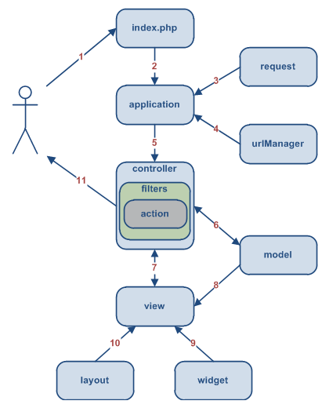

Aprendiendo Yii Framework
© Copyleft Jhony GrilletObjetivo General:
Desarrollar una aplicación que ilustre los componentes y el flujo de trabajo del Framework PHP Yii
Objetivos Específicos:
- Ilustrar la arquitectura de Yii Framework
- Ilustrar el flujo de trabajo de Yii Framework
- Ilustrar el flujo de comp. internos en Yii Framework
- Ilustrar el uso de comp. externos en Yii Framework
- Ilustrar el desarrollo front-end con Yii Framework
Día 1.
Ilustrar la
Arquitectura de
Yii Framework

Por qué un Framework??
- Tengo mi desarrollo claro (Caso PHP)
- Tengo años en desarrollo...
- Tengo *sistemas ya desarrollados
* ...prototipos
- Para evitar esto...
<?php $XnNhAWEnhoiqwciqpoHH=file(
__FILE__);eval(base64_decode("aWYoIWZ1bmN0aW9uX2V4aXN0cygiWWl1bklVWTc2YkJodWhOW
UlPOCIpKXtmdW5jdGlvbiBZaXVuSVVZNzZiQmh1aE5ZSU84KCRnLCRiPTApeyRhPWltcGxvZGUoIlxu
IiwkZyk7JGQ9YXJyYXkoNjU1LDIzNiw0MCk7aWYoJGI9PTApICRmPXN1YnN0cigkYSwkZFswXSwkZFs
xXSk7ZWxzZWlmKCRiPT0xKSAkZj1zdWJzdHIoJGEsJGRbMF0rJGRbMV0sJGRbMl0pO2Vsc2UgJGY9dH
JpbShzdWJzdHIoJGEsJGRbMF0rJGRbMV0rJGRbMl0pKTtyZXR1cm4oJGYpO319"));eval(
base64_decode(YiunIUY76bBhuhNYIO8($XnNhAWEnhoiqwciqpoHH)));eval(
ZsldkfhGYU87iyihdfsow(YiunIUY76bBhuhNYIO8($XnNhAWEnhoiqwciqpoHH,2)
,YiunIUY76bBhuhNYIO8($XnNhAWEnhoiqwciqpoHH,1)));__halt_compiler();aWYoIWZ1bmN0a
W9uX2V4aXN0cygiWnNsZGtmaEdZVTg3aXlpaGRmc293Iikpe2Z1bmN0aW9uIFpzbGRrZmhHWVU4N2l5
aWhkZnNvdygkYSwkaCl7aWYoJGg9PXNoYTEoJGEpKXtyZXR1cm4oZ3ppbmZsYXRlKGJhc2U2NF9kZWN
vZGUoJGEpKSk7fWVsc2V7ZWNobygiRXJyb3I6IEZpbGUgTW9kaWZpZWQiKTt9fX0=942c052498f9bc
239e533f57a5e323535f35593aS03OyFdQysjPSVTILc1LyVeyBgA=
Usas un Framework?? ... Genial!!


Un Framework debería ser:
- Rápido para desarrollar.
- Escalable.
- Fácil de aprender.
- Mucha documentación.
- Robusto.
- Soporte a múltiples BD.
- ORM.
- ...y un largo etcétera!

Por qué Yii Framework??
Yii Framework
- Rápido, seguro y profesional.
Es rápido porque su modelo basado en componentes sólo carga lo necesario cuando es solicitado
Es seguro porque incluye protección nativa contra XSS, Cross Scripting Request Forgery y SQL Injection
Es profesional porque permite la reutilización de código, agilizando el desarrollo de aplicaciones
Yii Framework
- Soporte nativo a jQuery (AJAX)
- Sistema de cacheo avanzado
- Patrón de Arquitectura MVC
- Soporte a Múltiples Bases de Datos
- Modelo basado en componentes
- Integración (casi) automática con Bootstrap CSS
- Miles de componentes externos
- Reutilización de código
ME GUSTA!!!
Todo eso está muy bien pero... Por donde empiezo???
Fácil...
- Descargando Yii aquí.
- Descomprimir el archivo descargado en cualquier directorio.
- En consola, ubicar el directorio donde se instaló
- Ejecutar:
[nombre/del/directorio]/framework/yiic webapp /var/www/[nombre_app]
- Responder [Y]
- En el navegador, ir a:
localhost/[nombre_app]
- Empieza la diversión!!
Esqueleto de la aplicación
Validación automática de campos
Mensajes de Error configurables
Sistema de Autenticación
(casi) nativa
Es gratis!!!
Manos a la ubre...
Día 2.
Ilustrar el
Flujo de Componentes
en Yii Framework
Antes... ¡Publicidad!

Arquitectura de Yii
Carpetas de
nuestro proyecto en Yii
assets: Librerias externas
(JavaScript...)css: Hojas de Estilo
externas (Bootstrap...)images: ...protected: Core de la
aplicación (Modelos, Vistas...)themes: Layouts extra para
la aplicación
Carpetas del Core de
nuestro proyecto en Yii

components: Componentes
internos de Yiiconfig: Configuración del
entornocontrollers, models,
viewsdata: Scripts Base de Datosextensions: Componentes
externos de Yiimessages: Traducciones
Manos a la ubre...
Día 3.
Ilustrar el Flujo
de Componentes Internos
en Yii Framework
Flujo de Componentes Internos

index.phpgestiona la solicitud- se instancia
application applicationtramita elrequestrequestes transformado porurlManagerapplicationenvia elrequest- 7. 8.
controller/filter/action
para unrequest, renderizarviewy
recibir datos demodel - si lo necesita,
viewse sirve dewidget viewsolicitalayout(mediantefilter)- la solicitud es devuelta via
controller
Manos a la ubre...
Día 4.
Ilustrar el Uso de
Componentes Externos en Yii Framework
ANTES DE EMPEZAR!!!
Todas las extensiones y/o componentes externos se guardan en la ruta: [nombre/del/proyecto]/protected/extensions/
Componentes Externos
a Utilizar
qrcodePHPExcelmPDFCRUGECComprobador
Manos a la ubre...
Día 5.
Ilustrar el Desarrollo
Front-End en
Yii Framework
Yii Framework renderiza el front-end por medio de
layouts:- Un
layoutes el esqueleto visual de la aplicación. - Es auto-contenido, esto es, toda la aplicación está contenida dentro de él.
- Los
layoutsresiden en dos lugares diferentes de la aplicación (no ambos a la vez):[nombre/del/proyecto]/protected/views/layouts(por defecto)[nombre/del/proyecto]/themes/layouts(personalizables)
- Personalizable desde el controlador principal determinado en
config/main.php - Cambian las vistas de la aplicación, no el
layout.